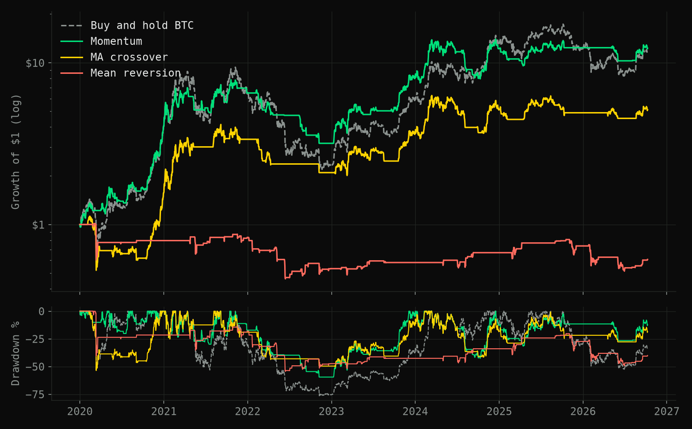
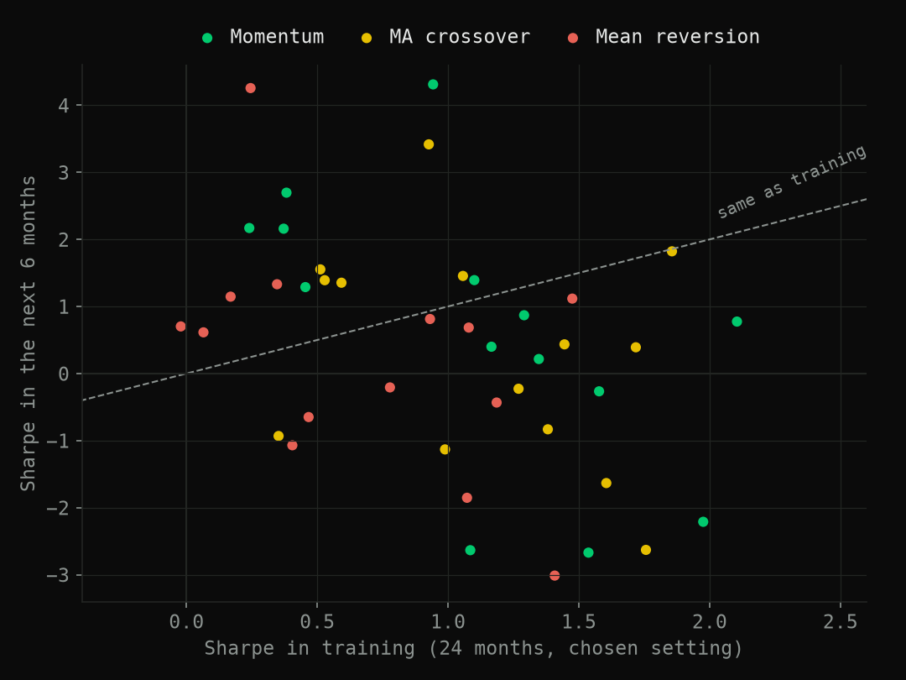

Testing Bitcoin strategies out of sample
Most backtests look good because they were tuned on the data they are judged on. This one judges every strategy only on data it has never seen.
The question
Can simple trading rules beat just holding Bitcoin, once they only use information available at the time and pay for every trade? Three rules, each either long Bitcoin or in cash (no shorting):
- Momentum: hold Bitcoin while its return over a recent window (5 to 180 days) is positive.
- Moving-average crossover: hold while a short-term average price is above a long-term one.
- Mean reversion: hold only while the price sits unusually far below its recent average, betting on a bounce.
How it's tested
- Walk-forward. Every six months, each strategy picks its best setting using only the previous 24 months, then trades the next six months, which it has never seen. The six-month slices join into one out-of-sample record from January 2020 to October 2026.
- Costs on every trade: 0.15% per side for commission and slippage.
- Written down first. The test design was committed before the first run, so the method couldn't drift towards a nicer answer.
- A confidence interval, not just a number. The Sharpe ratio is return per unit of risk (annual return ÷ annual volatility). A block bootstrap resamples the daily returns in 20-day chunks thousands of times, keeping the streaks in the data, to see how much the Sharpe difference against buy-and-hold could move by chance.
Result

| Strategy | Annual return | Sharpe | Worst fall | Time in market | Sharpe vs hold, 95% CI |
|---|---|---|---|---|---|
| Buy and hold BTC | +43.3% | 0.59 | −76.6% | 100% | |
| Momentum | +44.8% | 0.89 | −59.5% | 56% | −0.26 to +0.90 |
| MA crossover | +27.2% | 0.52 | −53.6% | 54% | −0.59 to +0.52 |
| Mean reversion | −7.1% | −0.22 | −54.5% | 13% | −1.52 to −0.10 |
Momentum matched Bitcoin's return while in the market only 56% of the time, with a smaller worst fall (−60% against −77%) and a higher Sharpe (0.89 against 0.59). But the 95% interval for the Sharpe difference runs from −0.26 to +0.90. It includes zero, so over this sample the edge can't be told apart from luck. Mean reversion lost money and was clearly worse than holding.
Did tuning help?

Mostly not. The chosen settings averaged a Sharpe of 0.7–1.1 in training but 0.25–0.6 afterwards, and a setting's rank in training said almost nothing about its rank next (rank correlation ≈ 0). The plain, untuned 20/50-day crossover (Sharpe 0.77) beat the tuned version (0.52). Tuning mostly fitted noise.
Checks
- Two independent engines. A fast vectorised backtester, which runs the whole price history at once, and a day-by-day account simulator with commission and slippage. They rank the strategies the same way.
- Costs. The ranking is the same at zero, 0.15% and 0.30% per side.
- Timing. The moving-average result depends on when you trade: acting one day later cuts its Sharpe from 0.52 to 0.38. Momentum barely moves (0.97).
What I got wrong along the way
- Annualising with 252 days. That's the stock-market year; Bitcoin trades all 365 days, so every annualised figure was understated.
- A win rate above 100%. Winning short days were counted, but divided by long days only.
- Indicators warming up inside each test window. A 100-day average computed on a six-month slice never had enough data, so the strategy barely traded out of sample. Indicators now use the full history before being sliced.
- No costs in the fast backtester. It now charges on every change of position.
Limits
One asset, daily prices, no shorting, a fixed cost assumption and one market history. Three strategies were tested, so some apparent edge is expected by chance alone.